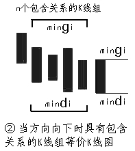
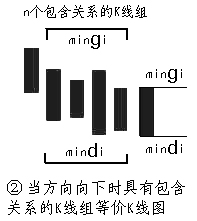

第67课：线段的划分标准
Walter:
正文
笔的划分标准在前面已经严格给出，因此，下一关键问题，就是如何划分线段。下面，给出类似笔划分，但有重大区别的划分标准。用S代表向上的笔，X代表向下的笔。那么所有的线段，无非两种：一、从向上笔开始；二、从向下笔开始。简单起见，以向上笔开始的线段为例子说划分的标准。
以向上笔开始的线段，可以用笔的序列表示：S1X1S2X2S3X3…SnXn。容易证明，任何Si与Si+1之间，一定有重合区间。而考察序列X1X2…Xn，该序列中， Xi与Xi+1之间并不一定有重合区间，因此，这序列更能代表线段的性质。
(注：缠师用组成线段的所有某方向笔(线段开始笔反方向的笔，挺拗口的)定义了特征序列(串)，没有明确元素的定义，根据博文内容推断特征序列元素指的是某一笔。特征序列就是该方向所有笔组成的特征笔串(序列))
定义：序列X1X2…Xn成为以向上笔开始线段的特征序列；序列S1S2…Sn成为以向下笔开始线段的特征序列 …
 



 1分钟图
1分钟图

 缠论原配图
缠论原配图